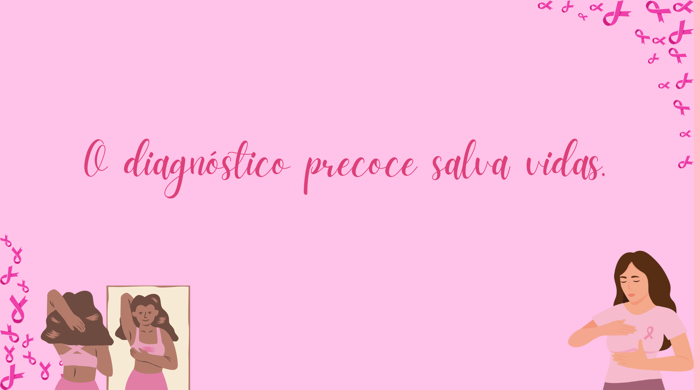
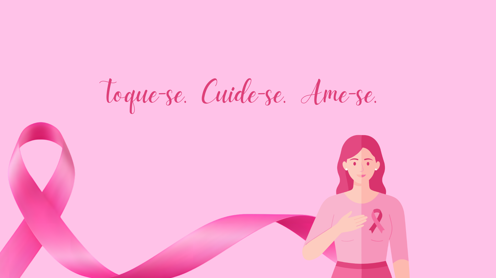

Aqui, cada dia √© uma nova oportunidade de inspirar, acolher e fortalecer. Nosso destaque di√°rio traz a hist√≥ria de uma guerreira ‚Äî mulheres reais que enfrentaram o c√¢ncer de mama com coragem, amor e esperan√ßa. Mais do que um site, este √© um movimento de conscientiza√ß√£o e empatia. Queremos lembrar que o diagn√≥stico precoce salva vidas, e que nenhuma mulher est√° sozinha nessa jornada. Acompanhe, emocione-se e compartilhe essas hist√≥rias que nos lembram do poder da vida e da import√¢ncia do cuidado. üå∏ Porque juntas, somos mais fortes.